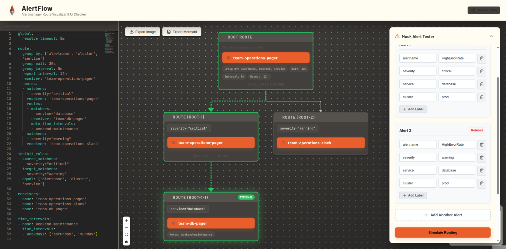
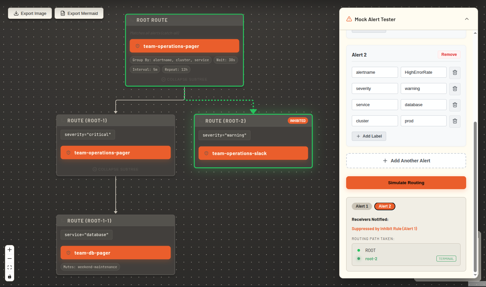
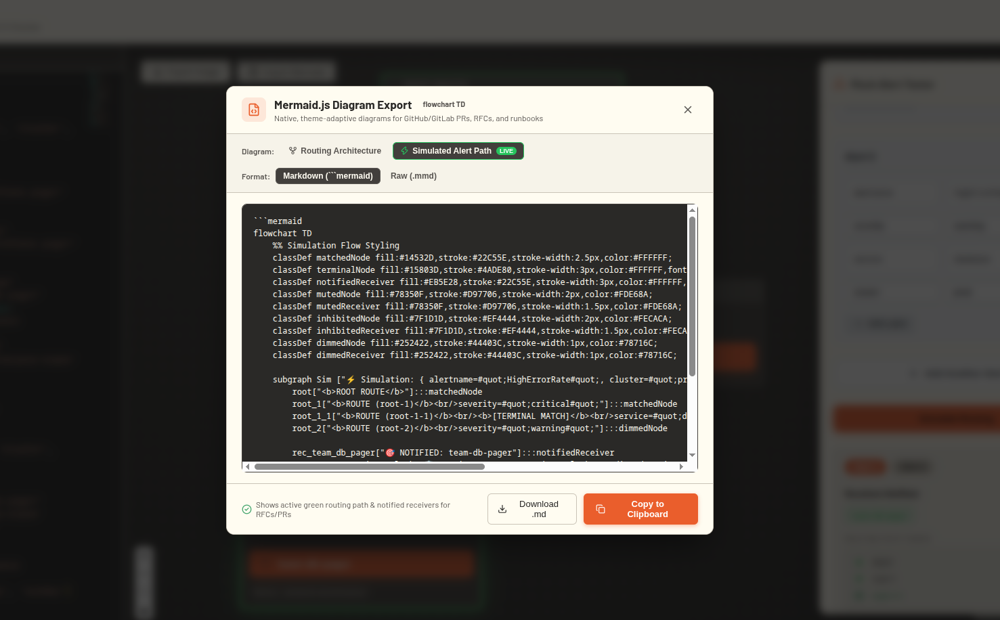
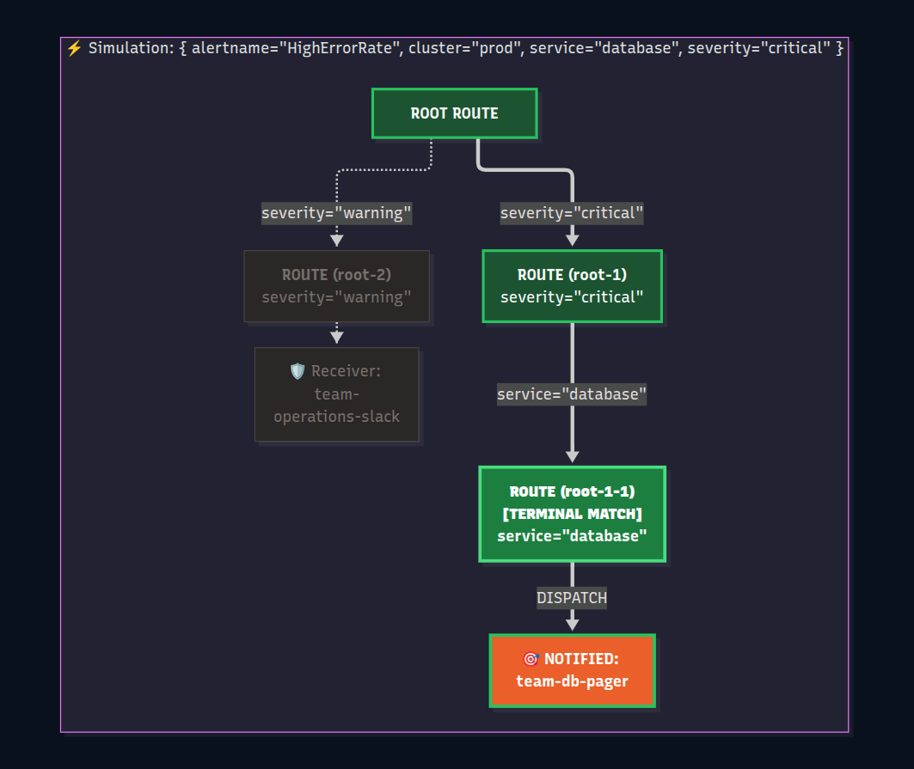
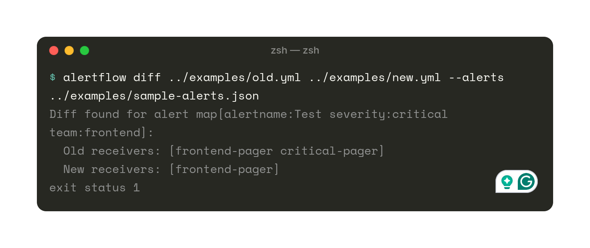

AlertFlow parses your Prometheus alertmanager.yml into an interactive visual tree, executes live multi-alert simulations with inhibition rules, and catches silent routing bugs in CI before they hit production.
docker run -d -p 8080:8080 ghcr.io/subratojec/alertflow:latest

A single misplaced indent, an overlooked continue: true, or an unexpected inhibition rule can silently drop mission-critical alerts.
alertmanager.yml files by hand.
Designed for Platform Engineers, SREs, and DevOps teams who value reliable notifications.
Pan, zoom, collapse subtrees, and inspect nested matchers, group intervals, and receivers visually.
Fire batches of mock alerts simultaneously. Watch the path light up green, red (inhibited), or orange (muted).
Simulate alerts at specific dates and hours to verify mute_time_intervals and active maintenance windows.
Export routing trees & simulation flows directly as Mermaid Markdown (flowchart TD) for GitHub PRs and RFCs.
Run alertflow diff in GitHub Actions. If a PR changes who gets notified, your pipeline catches it before merge.
No external databases, no complex setup. The React frontend is compiled natively into the Go binary.
Alertmanager's inhibition rules suppress lower-severity alerts when high-severity alerts fire with matching tags. AlertFlow runs this exact algorithm live in your browser.

No more hosting static PNGs or uploading screenshots that break in dark mode. Export native Mermaid Markdown (flowchart TD) with decision conditions directly on arrows.
.mmd files.


AlertFlow isn't just a UI tool. It ships with a fast Go CLI designed to run in GitHub Actions to ensure pull requests don't silently route alerts to the wrong receiver.
# 1. Validate syntax and detect orphan receivers
alertflow check alertmanager.yml
# 2. Diff routing behavior against test alerts
alertflow diff old.yml new.yml --alerts sample-alerts.json
# 3. Export Mermaid diagram for PR comment bots
alertflow mermaid alertmanager.yml --markdown
Run AlertFlow with a single Docker command. A sample configuration is pre-loaded so you can explore immediately.